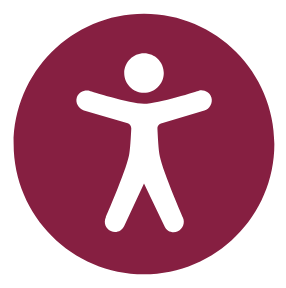

I have a service animal.
I have a service animal.Everyone needs special accommodations at some point because we all learn differently. I am happy to work directly with you or with the Services for Students with Disabilities (SSD) staff to make sure that you have the support you need.
To document what will help you the most, please contact Services for Students with Disabilities (SSD) in 310 Lavery Hall (map link, above the Turner Place Dining Center) as soon as possible to ensure that you have the resources you need to participate in the class. The procedures and forms you need are also available on the SSD website.
Please let me know what you need during the first week of the term so that I can be sure you have the resources you need as soon as possible. Also email me your documentation from the SSD office by the end of the first week of class if possible. If not possible, send the information as soon as you can. Because I am not on campus due to COVID-19, do not take your documentation to my office.
That’s okay too. I know that the official testing can be expensive and time-consuming. Send me a private message in Canvas that tells me what you need, and I will try to help.
No problem. If you need more time on a project or need to complete work in a less distracting environment, take the time you need. Check the late policy for more details.
I have a service animal.EXCELLENT! I love pets. Be sure to share a photo if you can.
More information in “Accessibility,” from Technical Writing Course Manual.
Are there any accomodations you need for this course? Tell me about how I can help you succeed.